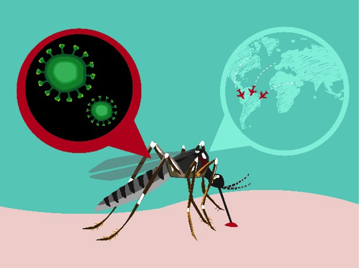

By Rosalind Bentley August 27, 2016
The Zika virus arrived in the continental United States this summer, with the first cases of local, mosquito-borne transmission publicly reported in the Miami-Dade County area at the end of July. Since then, the virus has spread, albeit slowly, to other Florida counties.
Officials at the Centers for Disease Control and Prevention have said it’s unlikely Zika will become an epidemic in the United States as it has in the territory of Puerto Rico, the Caribbean, Central and South America. Yet, the virus is cause for concern, especially for pregnant women or those trying to get pregnant. The National Institutes of Health has said the virus is likely to persist in the mainland for a couple of years. So what do you need to know about the Zika virus? Here are some answers.
What is Zika?
Zika is a disease that is primarily transmitted by two types of mosquitoes commonly found in the southeastern U.S., the Aedes aegypti and the Aedes albopictus. They bite throughout the day, not just at dawn and dusk. CDC Director Dr. Tom Frieden has called those two particular species, “the cockroaches of mosquitoes” because they are impossible to completely eradicate. The mosquitoes transfer the disease to humans through a bite. The disease then spreads through the person’s blood stream. It can also be spread through sex of any sort.
How long has it been around?
Chronologically, Zika is a Baby Boomer. It was discovered in 1947 in Uganda, in a forest called The Zika Forest. Hence, the name. Only decades later did the virus then show up in the Pacific Islands. Then, in early 2015, the disease showed up in Brazil. From there it has spread through the Americas.
How does a mosquito transmit Zika?
Only female mosquitoes bite people: they need blood to lay eggs, while males drink plant nectar. In the female, the virus travels from the gut to the salivary glands and is injected into the next human victim. When a mosquito bites, it first injects an anticoagulant saliva so blood does not clog its strawlike proboscis
What area is Zika likely to reach?
Zika is spread by mosquitoes of the Aedes genus, which can breed in a pool of water as small as a bottle cap and usually bite in daytime. The yellow fever mosquito, Aedes aegypti, takes several bites for each blood meal and prefers biting people; it accounts for most Zika infections. This mosquito is common in the United States typically only in Florida and along the Gulf Coast, although it has been found as far north as Connecticut in hot weather.
What are the symptoms of Zika?
Most people have no symptoms. Only one in five people do. Symptoms include, but are not limited to, fever, conjunctivitis, sore joints, rash, headache.
Is Zika dangerous?
For most people Zika doesn’t pose a serious health threat. There have been two cases, however, one in Utah and one in Puerto Rico, where men died after having a bout with the disease. Both men may have had other health complications that contributed to their deaths but Zika is believed to have played a role.
So what’s the big deal?
If you are sexually active, and especially if you are trying to get pregnant, Zika is something to be concerned about. Zika is the cause of some of the most devastating birth defects medical researchers have seen in decades. Not since rubella, have scientists seen a virus that can cause congenital birth defects. And never have they seen a mosquito-borne virus that can compromise the health of a fetus.
Is there a cure for Zika?
No. And there is no treatment. The National Institutes of Health, however, did begin vaccine trials in August 2016. It will be at least a couple of years before such a vaccine could become available.
Can you get it through a blood transfusion?
Possibly. The U.S. Food and Drug Administration has recommended that all blood donations and blood products be screened for Zika.
How do you get it through sex?
The CDC has said that any sexual activity, vaginal, anal, oral and even shared sex toys, can possibly spread the disease from partner to partner regardless of their sex. This is why the agency recommends practicing a safe barrier method of birth control during every encounter if you have traveled to an area of Zika transmission or have been diagnosed with the disease.
How long does it last in the body?
Researchers aren’t sure although they do believe that once a person is infected, it is likely they are immune to getting it again. If you have traveled to a Zika region, it’s best not to have unprotected sex for a period of months after returning, especially if you’re concerned about transmission of the virus. The virus has been found in blood, urine, genital secretions, semen, saliva and breast milk.
If I’ve traveled to a Zika region, where do I get tested?
You need to see your primary care physician who will assess your risk. Based on that, the doctor will coordinate testing of your blood and urine samples with your local department of public health. The CDC confirms results, but because Zika is very similar to other diseases trafficked by mosquitoes, such as dengue virus, sometimes a negative result isn’t for sure. More testing may need to be done. If you don’t have a primary care doctor, call the GDPH at 404-657-2588, between 8 a.m. and 5 p.m., Monday through Friday. An epidemiologist will talk with you about your risk factors and determine whether to refer you for testing.
What do I do in the meantime?
Wear bug repellent, preferably one with DEET or oil of lemon eucalyptus. Also, whenever you’re outside wear long sleeves and pants or skits. And, above all, remove all standing water around your home. A fountain with continuously running water is fine, because mosquitoes can't lay eggs in water that is in constant motion. But patio furniture, bird baths, old tires, the bed of a pickup truck, or any surface bigger than a bottle cap should be dumped daily. No amount of mosquito spraying will kill all mosquitoes.